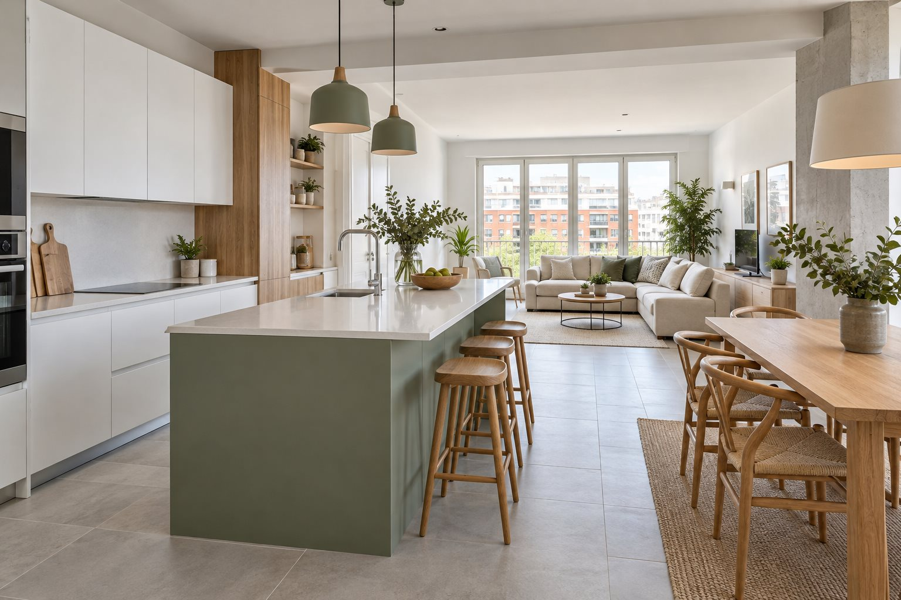

Madrid y provincias cercanas
Reformas integrales y parciales en Madrid
En Nacho Paveade hacemos todo tipo de reformas: viviendas completas, cocinas, baños y trabajos puntuales de albañilería, suelos y pintura. Cuéntanos qué necesitas renovar y valoramos contigo el alcance de la obra.
Solicitar presupuesto de reforma →
Reforma integral de pisos y casas
Una reforma integral permite revisar la distribución, los suelos, los revestimientos y los acabados de una vivienda. Empezamos por conocer su estado y tus necesidades para definir qué trabajos incluye el proyecto.
También realizamos reformas parciales cuando solo necesitas renovar una estancia o resolver trabajos concretos. El presupuesto se adapta a la superficie, al estado del inmueble y a los materiales elegidos.
Ver los servicios de reforma de viviendas →Reformas de cocinas y baños
En las cocinas estudiamos la distribución, la preparación del espacio, los alicatados y los solados. Podemos valorar una renovación completa o cambios parciales según el uso que necesitas dar a la estancia.
En los baños valoramos la renovación de suelos y revestimientos, la distribución y la adaptación de la bañera a una zona de ducha. Concretamos contigo los trabajos y acabados antes de preparar la propuesta.
Albañilería, alicatados, suelos y pintura
Si no necesitas una reforma completa, puedes consultarnos sobre reparación de paredes, renovación de alicatados, colocación de suelos o pintura de estancias. También estudiamos mejoras en patios y exteriores.
Para los pavimentos exteriores contamos con servicios de hormigón impreso en Madrid y reparación y recuperación de color.
Cómo pedir presupuesto para tu reforma
Envíanos la localidad, el tipo de inmueble, las estancias que quieres renovar, los metros aproximados y unas fotografías. Con esos datos podemos empezar a valorar el trabajo y concretar la información necesaria para el presupuesto.
El coste depende del alcance de la obra, el estado del soporte, los materiales y los accesos. Revisamos cada caso antes de proponerte una solución. Puedes conocer cómo trabajamos y consultar nuestra galería de obras reales de pavimentos.
Zona de servicio
Reformas en Madrid y provincias cercanas
Estamos ubicados en Madrid capital y realizamos reformas en la Comunidad de Madrid y provincias cercanas. Valoramos cada desplazamiento según la localidad, las dimensiones y las características de la obra.
Llámanos al 643 980 232 o escríbenos a nachopaveade@gmail.com.
Cuéntanos tu reforma →